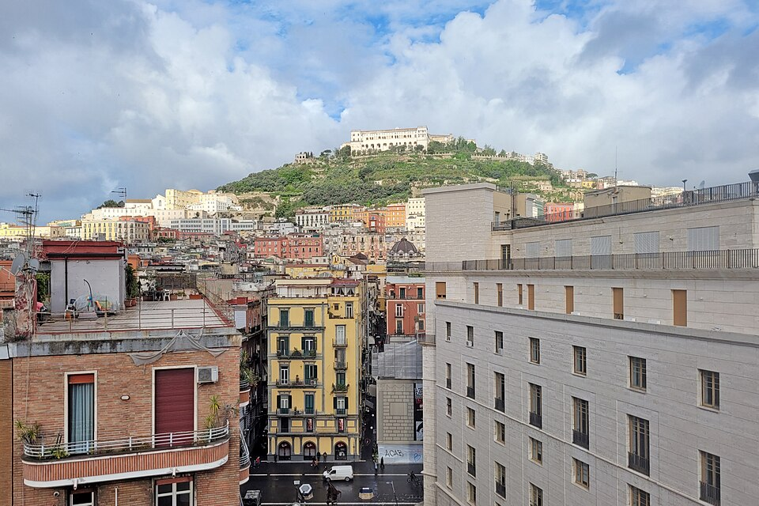

Piazzale San Martino
Prima di scendere scegli tre punti del panorama da ritrovare più in basso.
Controlla costo, prenotazione, apertura e accessibilità con il gestore. / Check price, booking, opening and accessibility with the operator.

Prima di scendere scegli tre punti del panorama da ritrovare più in basso.
Controlla costo, prenotazione, apertura e accessibilità con il gestore. / Check price, booking, opening and accessibility with the operator.